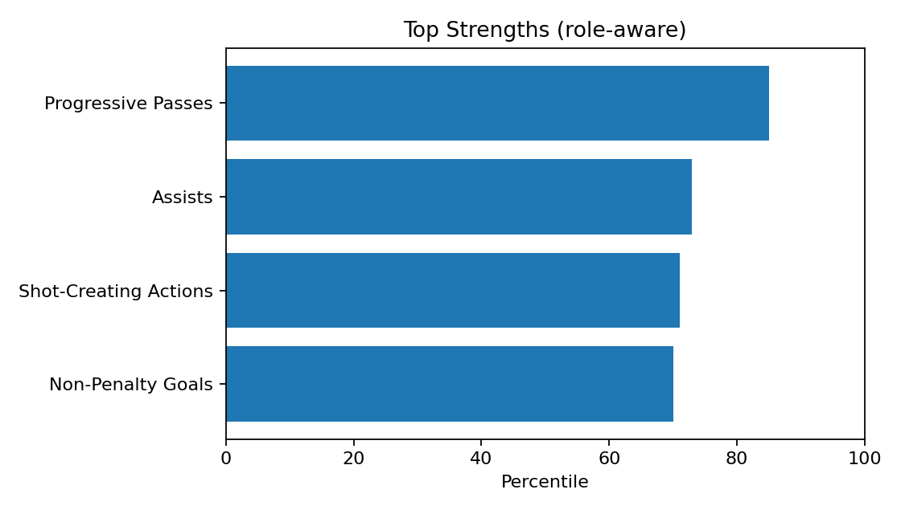
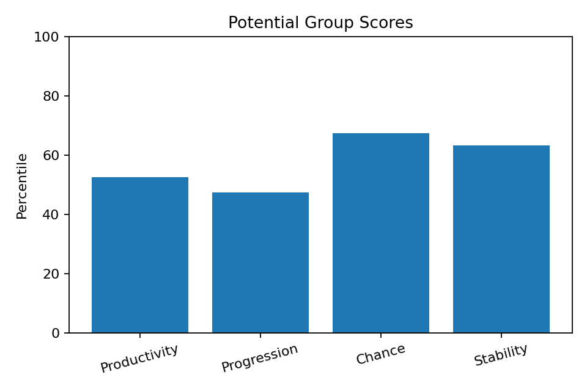
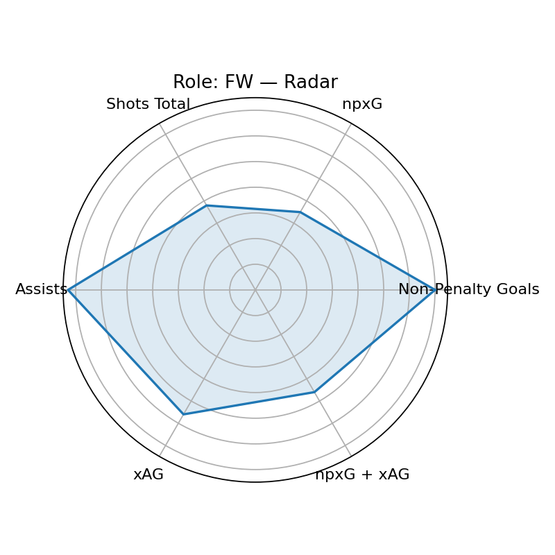

Scout Visual — Xavi Simons
Player ID: da4d670f · Role: FW · Minutes: 2177 · Age: 22
Current: None (base None, rel None, age None)
Potential: 50.9 — Groups: 52.5/47.4/67.3/63.2
Top Strengths

Potential Groups

Role/Style Radar

Playstyle Engine
Primary: False Nine (71.3)
Top-3: False Nine(71.3), Wide Playmaker(71.2), Target Man(65.9)
근거: Progressive Passes 상위 85퍼센(강점)
개선: 핵심 보완 포인트 없음(상대적 우수)
Wikipedia-derived Qualitative
Qual Score: 100.0
injury=0, discipline=0,
transfer=0, char+= 0,
char-= 0, recent_w=1.0
Wikipedia: https://en.wikipedia.org/wiki/Xavi%20Simons
Bias Diagnostics
Mode: v3
Diversity: 0.956
Imbalance penalty: 4.0
Uncertainty penalty: 2.5
Age gain: 8.8
Narrative — Current
[현재력] 역할=FW, 최종점수=56.9 / 강점: Progressive Passes(85p), Assists(73p), Shot-Creating Actions(71p), Non-Penalty Goals(70p) / 약점(역할기반): Touches (Att Pen)(14p), npxG(35p), Progressive Passes Rec(35p) / 기초=51.4, 출전보정=1.8, 나이표시=4.8
Narrative — Potential
[잠재력 v3] 역할=FW, 잠재점수=50.9 / 그룹: 생산52/전진47/찬스67/안정63 / 엘리트95+ 0, 99+ 0, 다양성=0.956 / 불확실성패널티=2.5, 불균형패널티=4.0, 나이이득=8.8
Coaching — Style-specific
- Shot-Creating Actions 유지+응용: 역압박 상황 전개/선택지 추가 / 주 1회(클립 5개)
- Assists 유지+응용: 역압박 상황 전개/선택지 추가 / 주 1회(클립 5개)
- xAG 상향: 난이도 상승(제한터치·시간압박) / 주 2회(10분)
- Progressive Passes 유지+응용: 역압박 상황 전개/선택지 추가 / 주 1회(클립 5개)
- npxG + xAG 안정화: 상황별 반복(반전/오픈바디 추가) / 주 2회(15분)
- 리버스/스루 타이밍: 마지막 두 수비자 사이 창 만들기
Growth Roadmap — Phased
- · 0~6주: 고난도 상황 반복(압박/시간 제약) 주 2세션 / 파이널 서드 의사결정 트리 15분 / 프리셉션 각도 교정(45°/90°) / 리버스/스루 타이밍: 더미 2명
- · 6~12주: 압박 하 전진패스(제한터치) 반복 / 세컨드볼 후 즉시 전개 패턴
- · 12주+: SCA 70퍼센+ 달성 / 프로그레시브 패스 80퍼센+ 유지 / Shot-Creating Actions: 71→80 퍼센 상향 / Assists: 73→80 퍼센 상향